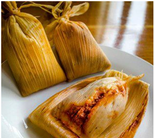
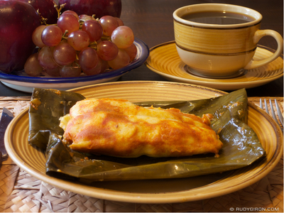
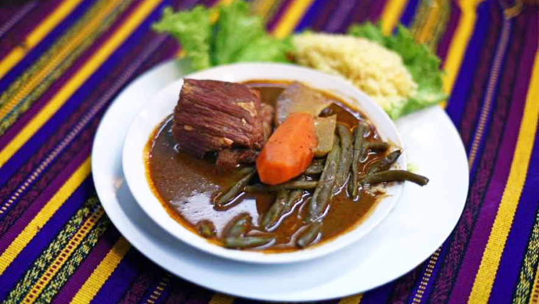
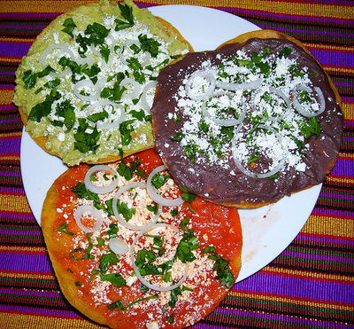
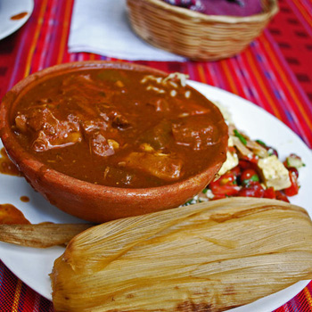

Guatemala
Lo mejor de la cocina guatemalteca
Favoritos:






Historial:
Kak'ik
18/08/2019
El Kak ik es una sopa de chompipe (una clase de pavo) típica de la gastronomía de Guatemala. Es una comida de origen prehispánico. La receta tradicional de la región de Las Verapaces incluye chompipe, ajo, cebolla, hierba buena, cilantro y hojas de zamat. El Color Rojo se debe al Achiote molido.
Rellenitos
18/08/2019
Son plátanos cocidos que se hacen puré, tradicionalmente están rellenos de frijol, el cual ha sido preparado con azúcar y canela.
Café
15/08/2019
Las cadenas montañosas que entrecruzan el país, permiten que el café se produzca en casi todas las regiones de Guatemala. El más fino, considerado de especialidad, se cultiva entre 1.300 y 2.000 metros sobre el nivel del mar.